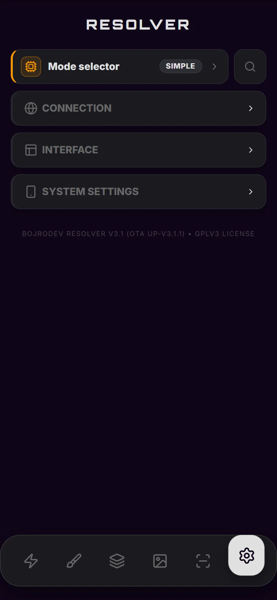

Docs / Settings
Config
The tab holds every setting, in 13 sections that open and close. All of them are below with their defaults: search, or pick a section.
Finding a setting in the app
- The Search settings… box at the top of Config finds any option by name and opens its section, with the match marked. The × clears it.
- Tap a section’s header to open or close it; the app remembers which are open.
- Changes are saved at once: there is no Save button.
- Options shown under another (indented below) appear only while that one is on.
Undo everything
System Settings → RESET APP CONFIGURATION puts every option back to its default. Your connections, prompts, History, styles, LoRA settings and presets are kept.
